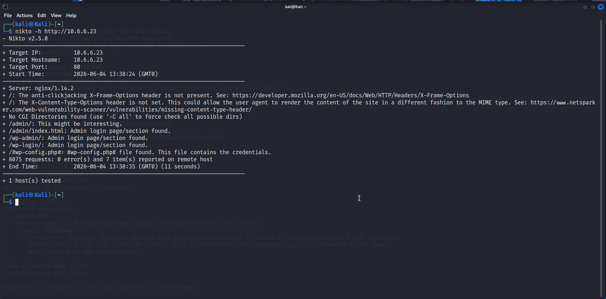
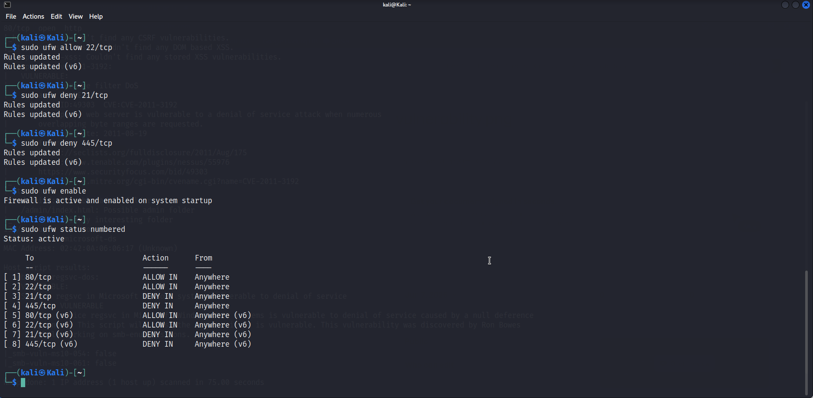

Project Overview
Analyzed potential security threats and developed response strategies to strengthen organizational security posture. The work spanned web application assessment and defensive hardening: Nikto scanned a web application for misconfigurations and known weaknesses, and those findings then drove firewall policy work on Kali Linux to close the identified attack vectors.
This closed the loop between finding a weakness and actually reducing it, pairing offensive discovery with defensive response.
Key Responsibilities
- Performed a web application vulnerability assessment using Nikto.
- Identified security weaknesses and misconfigurations in the web application.
- Analyzed threats and mapped them to likely attack paths.
- Implemented firewall policies on Kali Linux to mitigate attack vectors.
- Developed and documented response strategies for the organization.
- Verified that hardening reduced the exposed surface.
Threats & Controls Addressed
- Web Application Misconfigurations (Nikto)
- Known Web Vulnerabilities
- Mapped Attack Paths
- Firewall Hardening Policies
- Mitigated Attack Vectors
- Documented Response Strategies
Tools & Technologies Used
Analysis & Response Activities
- Scanning the web application with Nikto
- Reviewing and triaging reported weaknesses
- Mapping weaknesses to realistic attack paths
- Writing firewall rules to block or limit exposure
- Testing that policies held without breaking legitimate use
- Documenting the response strategy
Impact & Outcomes
- Web weaknesses identified and clearly understood.
- Firewall policies reduced the practical attack surface.
- Response strategies provided a clear playbook for similar threats.
- Demonstrated the full find-then-fix security loop.
Project Evidence


Skills Demonstrated
- Web Application Assessment (Nikto)
- Threat Analysis
- Firewall Hardening
- Risk & Attack-Path Mapping
- Defensive Response
- Security Documentation
Project Outcome
This project strengthened practical experience in linking threat analysis to defensive action, from web application scanning to firewall hardening. It also enhanced the ability to develop response strategies that turn discovered weaknesses into a measurably stronger security posture.